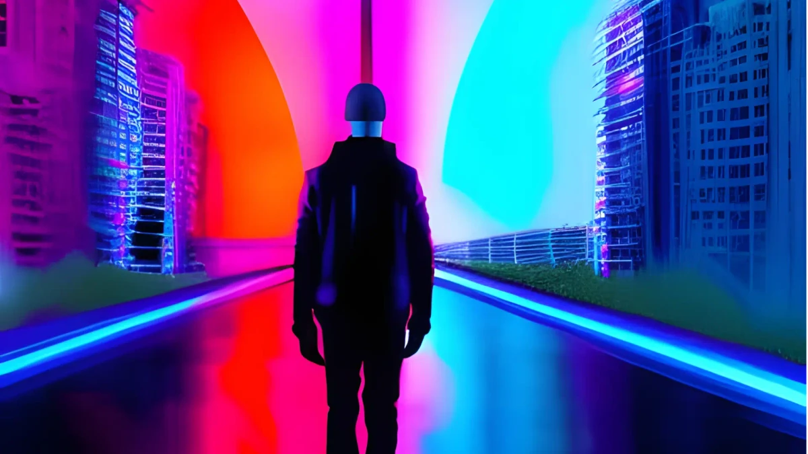

Teaching
Courses given by our research group
TRA385 - Machine Learning and AI through Artistic Innovation

Description
Innovation is often guided by a curiosity-based exploration with new technology. Machine Learning and AI through Artistic Innovation is a hands-on and practice-based course that encourages curious exploration into ML and AI technology through artistic imagination. This is a project-based course in which students explore machine learning or artificial intelligence for producing and realizing an artwork. The artworks can be installations (static, generative, or interactive) or live performances.
General information
The course activities are grouped into three parts: lectures, hands-on workshops, and a final project. The course lectures cover introduction to arts and technology; practical introduction to the fields of ML and AI; toolkits and methods for innovation, project development and management, teamwork; and methodology for investigating the societal impact of technology. The workshops are on prototyping with support from generative AI; introduction to creative coding frameworks; artificial intelligence for music and multimedia; sensors and electronics with interactive machine learning; to develop students’ hands-on skills towards their final project.
The workshops are on prototyping with support from generative AI; introduction to creative coding frameworks; deep learning for sound, image, and video; and sensors and electronics with interactive machine learning to develop students’ hands-on skills towards their final project. The final project is an artwork produced and realized as a group, either installed or performed, at the final public exhibition of the course. Through artistic imagination and exploration, students discover free-thinking and develop new perspectives to engage artistic innovation through machine learning and AI.
Prerequisites
Artistic applications of Machine Learning (ML) and Artificial Intelligence (AI) span a broad range of topics and skill sets. The students are expected to have basic knowledge in any of the emerging technologies such as creative coding or coding in general, machine learning and AI, prototyping and design, electronics and/or robotics. We are expecting students with a curiosity towards new, upcoming, and emerging technology, where hands-on exploration guides innovation.
More info and how-to-apply:
About Tracks
Tracks is a unique educational initiative regarding learning and learning environments that prepares the university for the needs of tomorrow. Tracks are exactly what Chalmers students are offered – tracks between different programmes in the form of elective courses, where the choices are guided by personal interest. The framework of Tracks provides opportunities for individualised study and collaboration between students, industry, the community and academia. We look forward to welcoming you to FUSE Box 2 to showcase Chalmers’ next generation of artist-technologists.